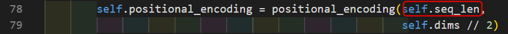
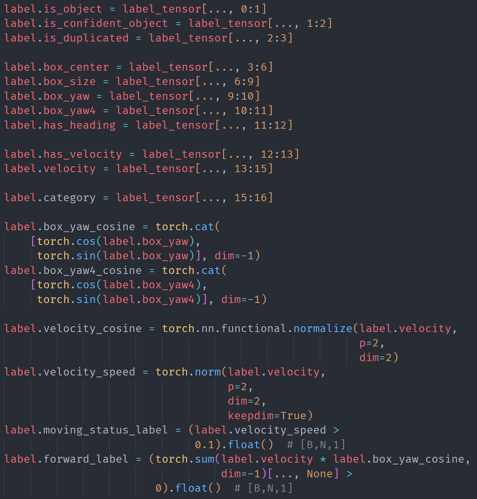
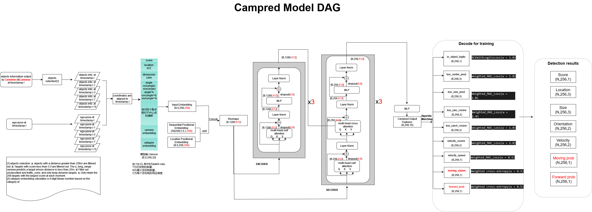
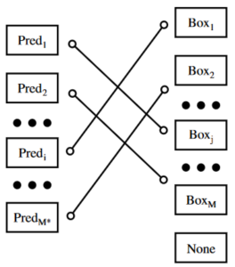

95_WR MS5 Camera Prediction
1. Module task
Camera Prediction component receives from two upstream upstream camdetect and camnear The detection results of the model are used as input. Through the detection results in multi -frame BEV, the final output more refined object detection 3D Boxes.
2. Model input
enter:
Multi-Frame Detection Result from Upstream Multi-Task Model, the feature dimension of each object detection result is 32: 32:
Object confidence score
Object category
Object 2D bounding box
Object 3D bounding box (center, size, yaw) in vehicle coordinates
Which camera is this detection from
ego-car movement information (provided as ego pose at each frame):
History 4 frames (T, T-1, T-3, T-7, T-1 15) vehicle Pose information
3. Dataset
Data pre -processing:
Pre -order frame 3D Boxes fusion:
The 3D Boxes of the front-order frame (T, T-1, T-3, T-7, T-15) objects are converted to the current frame through the vehicle POSE information to view each box in the current vehicle coordinates.
Two position codes:
Sequential Positional Embedings(temporal positional encoding for objects in different frames, ):shape:[1,5, 1,128]， self.seq_len = 5

Location Positional Embedings(using x/y coordinates of input boxes):shape:[16,5, 512,128]

ENCODINGS dimension before Backbone:
original shape:[16,5, 512,256]
after reshaping : [16, 1280, 256]
Enter Tensor dimension:
[B, T, N, C] = [16, 5, 512, 32]
Output Tensor dimension:
[16, 256, 18]
GT：
During the dimension: [16, 256, 18]
The meaning of each channel in GT:

4. Model Design && DAG
Model-Architecture

5. Training recovery
Train PreprocessD data, reapped document indicators;
Training set data volume: 232284
Verification set data volume: 15559
Comparison of experimental indicators:
Metric
WR_Reported
Reproduced
exp-1
exp-2
exp-3
avg
exp-1
exp-2
exp-3
avg
AVG indicator difference (%)
Detection_Precision
-
-
-
-
0.9193
0.9212
0.9233
0.9212
-
Detection_Precision_L
-
-
-
-
0.6975
0.6972
0.6940
0.6962
-
Detection_Recall
-
-
-
-
0.6886
0.6858
0.6845
0.6863
-
ap
0.8453
0.8416
0.8452
0.8440
0.8447
0.8467
0.8421
0.8445
+0.05%
apl
0.6741
0.6690
0.6735
0.6722
0.6741
0.6685
0.6693
0.6706
-0.23%
Velocity_Mean_Error
-
-
-
-
0.9335
0.9343
0.9333
0.9337
-
Velocity_Speed_Mean_Error
-
-
-
-
0.7157
0.7201
0.7208
0.7188
-
Velocity_Heading_Mean_Error
-
-
-
-
0.1933
0.1938
0.1941
0.1937
-
yaw4_Mean_Error
-
-
-
-
0.1426
0.1422
0.1448
0.1432
-
yaw_Mean_Error
-
-
-
-
0.0376
0.0382
0.0384
0.0380
-
Other indicators except AP, other indicators are not provided.
6. Summary (different from MS4)
model design
Differences in MS4: (The difference in red words in the DAG diagram is marked with differences)
Enter: The characteristic dimension of each object is 32 (41);
Set up effective perception distance: 200M
Transformer Backbone: Hidden_dim-> 512 (256), NUM_LAYERS-> 3 (6), abandoned Dropout
Transformer decoder
The pre-order frame information used: [T, T-1, T-3, T-7, T-15] ( ms4:[T, T-1, T-2, T-3, T-4]）
Loss part:
The two -point diagram matching method is used for positive samples (CLS_COST_WEIGHT = 2.0、reg_cost_weight = 0.25）

get rid IS_Duplicated_Logits Loss, adding MOVING_STATUS_LOSS (exercise probability loss), Forward_loss
question:
Data_Loader function libcampred.campreddataloader is a black box sealed with libcampred
The type of module in Config increases from 1 to 8, but only one category is used during training?
category_list = [
"background",
"human",
"cyclist",
"three_wheel",
"car",
"truck",
"other",
"static_obstacle",
"general",
]
AOS code is not largely different from MS4:
Input form of reasoning model: update to the two upstream splicing results of CAMNEAR and CAMDETECT as input
The prediction results were added to moving_prob and forward_prob